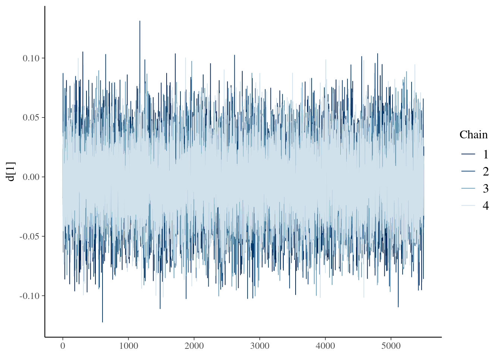

ネットワークメタ分析
ネットワークメタ分析
治療Aと治療Bを直接比較した臨床試験の効果を統合するときに使用されるのがメタ分析です。ただ，治療Aと治療B，治療Aと治療Cの直接比較はあるけど，治療Bと治療Cを比較した研究はない（もしくは少ない）状況もあります。その場合に，治療Aと治療B，治療Aと治療Cの直接比較の効果から，治療Bと治療Cの間接比較の効果を検討するネットワークメタ分析という方法があります。以下では，ネットワークメタ分析についてまとめています。
Rstanでベイジアンネットワークメタ分析
ネットワークメタ分析は，３つ以上の治療の比較が可能なメタ分析です。これまでよく行われていたメタ分析（一対比較のメタ分析）は，２つの治療間の直接比較の結果を統合するものでした（一対比較のベイジアンメタ分析については，こちらを参照ください）。一方，ネットワークメタ分析では，３つ以上の治療について，直接的な比較だけでなく，間接的な比較（別の２つ以上の治療薬の効果から，検討されていない２つの治療薬間の差を推定する）も行って，治療効果の統合をします。ネットワークメタ分析の利点としては，以下の３点があります。
- 間接比較ができる
- 間接と直接比較を統合し，より精度を高められる
- 複数の治療が比較でき，効果のランキングが作れる
ネットワークメタ分析を学ぶ場合，『Network Meta-Analysis for Decision-Making』](https://www.amazon.co.jp/dp/1118647505/ref=cm_sw_em_r_mt_dp_U_i6l0EbR0Z21F1)は，丁寧な説明がされており，おすすめの書籍です。ただ，記載されているコードはWinBUGSのものです。Mac & Stanユーザーとしては，WinBUGSはきついので，第2章で紹介されている固定効果モデルのネットワークメタ分析をStanコードで書き直したものを以下で説明します。
使用するパッケージ
以下のパッケージを使います。これら一式がインストールされたDockerfileも公開しているので，こちらの記事も参照ください。
library(rstan)
library(tidybayes)
library(tidyverse)
library(bayesplot)
library(loo)
library(gemtc)
library(gridExtra)データ
使用するのは，『Network Meta-Analysis for Decision-Making』の２章で紹介されている血栓溶解薬のデータです(Caldwell et la., 2005のデータ)。７つの治療薬について検討した36試験のデータです。
変数名について説明します。studyは研究のID，treatmentは治療の種類，deadは死者数，sampleSizeはその治療に参加した患者数です。baselineは，当該試験のベースラインとなる治療です(今回，SKをリファレンスの治療にします。多く試験ではSKがベースラインになりますが，SKが含まれない試験もあり，その場合は他の薬剤がベースラインになります)。treatmentNameは治療薬名，studyNameは第1著者の姓か研究プロジェクト名， studyYearは論文の出版年です。治療の種類のtreatmentと治療薬名のtreatmentNameの組み合わせは以下になります。
- 0 = SK
- 1 = t_PA
- 2 = Acc_t_PA
- 3 = SK_t_PA
- 4 = r_PA
- 5 = TNK
- 6 = PTCA
以下を実行して，Rにデータを読み込んでみましょう！
study <- c(1,2,3,4,5,6,7,8,9,10,11,12,13,14,15,16,17,18,19,20,21,22,23,24,25,26,27,28,29,30,31,32,33,34,35,36,1,2,3,4,5,6,7,8,9,10,11,12,13,14,15,16,17,18,19,20,21,22,23,24,25,26,27,28,29,30,31,32,33,34,35,36,1)
treatment <- c(0,0,0,0,0,0,0,0,0,0,0,0,0,0,0,0,0,0,0,1,1,1,2,2,2,2,2,2,2,2,2,2,2,2,2,2,2,1,1,1,1,1,1,1,1,3,4,6,6,6,6,6,6,6,6,6,6,6,4,4,5,6,6,6,6,6,6,6,6,6,6,6,3)
dead <- c(1472,3,12,7,10,887,5,1455,9,4,285,11,1,8,1,4,14,9,42,2,13,2,13,356,522,3,10,40,5,5,2,19,59,5,16,8,652,3,7,4,5,929,2,1418,6,6,270,2,3,5,1,0,7,3,29,3,5,2,7,757,523,1,3,32,5,3,3,20,52,2,12,6,723)
sampleSize <- c(20251,65,159,85,135,10396,63,13780,130,107,3004,149,50,58,53,45,99,41,421,44,200,56,155,4921,8488,55,94,573,75,69,61,419,782,81,226,66,10396,64,157,86,135,10372,59,13746,123,109,3006,152,50,54,47,42,101,46,429,46,195,47,169,10138,8461,55,95,565,75,71,62,421,790,81,225,71,10374)
baseline <- c(0,0,0,0,0,0,0,0,0,0,0,0,0,0,0,0,0,0,0,1,1,1,2,2,2,2,2,2,2,2,2,2,2,2,2,2,0,0,0,0,0,0,0,0,0,0,0,0,0,0,0,0,0,0,0,1,1,1,2,2,2,2,2,2,2,2,2,2,2,2,2,2,0)
treatmentName <- c("SK","SK","SK","SK","SK","SK","SK","SK","SK","SK","SK","SK","SK","SK","SK","SK","SK","SK","SK","t_PA","t_PA","t_PA","Acc_t_PA","Acc_t_PA","Acc_t_PA","Acc_t_PA","Acc_t_PA","Acc_t_PA","Acc_t_PA","Acc_t_PA","Acc_t_PA","Acc_t_PA","Acc_t_PA","Acc_t_PA","Acc_t_PA","Acc_t_PA","Acc_t_PA","t_PA","t_PA","t_PA","t_PA","t_PA","t_PA","t_PA","t_PA","SK_t_PA","r_PA","PTCA","PTCA","PTCA","PTCA","PTCA","PTCA","PTCA","PTCA","PTCA","PTCA","PTCA","r_PA","r_PA","TNK","PTCA","PTCA","PTCA","PTCA","PTCA","PTCA","PTCA","PTCA","PTCA","PTCA","PTCA","SK_t_PA")
studyName <- c("GUSTO-1","ECSG","TIMI-1","PAIMS","White","GISSI-2","Cherng","ISIS-3","CI","KAMIT","INJECT","Zijlstra","Riberio","Grinfeld","Zijlstra","Akhras","Widimsky","DeBoer","Widimsky","DeWood","Grines","Gibbons","RAPID-2","GUSTO-3","ASSENT-2","Ribichini","Garcia","GUSTO-2","Vermeer","Schomig","LeMay","Bonnefoy","Andersen","Kastrati","Aversano","Grines","GUSTO-1","ECSG","TIMI-1","PAIMS","White","GISSI-2","Cherng","ISIS-3","CI","KAMIT","INJECT","Zijlstra","Riberio","Grinfeld","Zijlstra","Akhras","Widimsky","DeBoer","Widimsky","DeWood","Grines","Gibbons","RAPID-2","GUSTO-3","ASSENT-2","Ribichini","Garcia","GUSTO-2","Vermeer","Schomig","LeMay","Bonnefoy","Andersen","Kastrati","Aversano","Grines","GUSTO-1")
studyYear <- c(1993,1985,1987,1989,1989,1990,1992,1992,1993,1991,1995,1993,1993,1996,1997,1997,2000,2002,2002,1990,1993,1993,1996,1997,1999,1996,1997,1997,1999,2000,2001,2002,2002,2002,2002,2002,1993,1985,1987,1989,1989,1990,1992,1992,1993,1991,1995,1993,1993,1996,1997,1997,2000,2002,2002,1990,1993,1993,1996,1997,1999,1996,1997,1997,1999,2000,2001,2002,2002,2002,2002,2002,1993)
# データフレームにして確認
data_net <- tibble(study,treatment,dead,sampleSize,baseline,treatmentName,studyName,studyYear)
data_net## # A tibble: 73 x 8
## study treatment dead sampleSize baseline treatmentName studyName studyYear
## <dbl> <dbl> <dbl> <dbl> <dbl> <chr> <chr> <dbl>
## 1 1 0 1472 20251 0 SK GUSTO-1 1993
## 2 2 0 3 65 0 SK ECSG 1985
## 3 3 0 12 159 0 SK TIMI-1 1987
## 4 4 0 7 85 0 SK PAIMS 1989
## 5 5 0 10 135 0 SK White 1989
## 6 6 0 887 10396 0 SK GISSI-2 1990
## 7 7 0 5 63 0 SK Cherng 1992
## 8 8 0 1455 13780 0 SK ISIS-3 1992
## 9 9 0 9 130 0 SK CI 1993
## 10 10 0 4 107 0 SK KAMIT 1991
## # … with 63 more rows今回のデータのネットワークを書いてみます。以降では，基本的にはStanを使いますが，ネットワークは，JAGSベースのネットワークメタ分析するGeMTCパッケージを使うと簡単にプロットしてくれます。これは便利なパッケージですが，今回はプロットだけに使います。GeMTC用に少しデータセットを変えて，mtc.network()で読み込み，プロットします。
data_net <- data.frame(study,treatmentName,dead,sampleSize)
names(data_net) <- c("study","treatment","responders","sampleSize")
data_net_GeM <- mtc.network(data_net)
plot(data_net_GeM)
以下のような感じです。ネットワークのノード（丸と丸をつなぐ線です）が太いほど，試験数が多いことを表しています。これをみると，SKは他の多くの治療薬と直接的に比較されていますが，TNKはSKとは直接的な比較がなされていないことが分かります。
ネットワークメタ分析(固定効果モデル)のStanコード
まず，data{}ブロックにおいて，使用するデータの定義をしています。教科書は行列形式でdeadやsampleSizeを読み込む形式ですが，少し今後の拡張を考えると面倒です(WinBUGSでやりやすいこととStanでやりやすいことは微妙に違ったりします)。まずlong型のデータセットにしてから（上記のデータはすでにそうなっています），各列をStanに読み込ませます。
parameters{}ブロックでは，推定するパラメータとして，mu(各研究におけるベースライン，リファレンスのSKのときもあれば他の治療の時もあります)とd(各治療におけるベースラインに対する相対効果)を準備しています。
model{}ブロックでは，死者数が二項分布に従うとして，死者数が，binomial_logit(試験の参加人数，死亡確率を構成する式)から生成されます。その場合の，死亡確率を構成する式（線形予測子）には，４つのパターンがあります。
- ベースラインがリファレンス(SK)でかつ，その治療がSKの時，線形予測子は，muのみ
- ベースラインがリファレンス(SK)でかつ，その治療がSK以外の時，線形予測子は，mu+d
- ベースラインがリファレンス(SK)以外でかつ，その治療がベースラインの治療の時，線形予測子は，muのみ
- ベースラインがリファレンス(SK)以外でかつ，その治療がベースライン以外の時，線形予測子は，mu+d(当該治療)-d(ベースライン)
四番目が間接比較になります。ネットワークメタ分析では，リファレンスに対する相対効果を推定することで，最終的にランキングなどを作ることができます。この相対効果がdになります。ただ，すべての治療がリファレンスと比較されているわけではないので，間接比較が必要になります。例えば，TNKは，Acc_t_PAとのみ比較をしていますので，間接比較によって，リファレンス(SK)と比較した際のTNKの相対効果も推定する必要があります。TNKによる死亡率は，mu+d(Acc_t_PA→TNK)で計算されます。ただ，今回は，リファレンスからのTNKの相対効果を推定したいので，d(Acc_t_PA→TNK)を，d(SK→TNK)からd(SK→Acc_t_PA)を引くことで計算します（これが上記のd(当該治療)-d(ベースライン)に相当します）。こういう感じで，間接効果も組み込んだ生成モデルを作ることで，間接効果の推定を行います。
なお，dとmuの事前分布としては，幅のひろーい正規分布としました。
generated quantities{}ブロックでは，exp()でdのオッズ比を計算しているのですが，dの可能な組み合わせすべての計算をしています（実際に検討されてない治療間の相対効果も計算している）。その計算が，どうにもStanでスマートにできなかったので，べた書きしています・・・（今後変更できるなら，変更したいです）。最後に，モデル比較用の対数尤度(log_lik)も計算しています。
以下のStanコードを“netmeta_network_fixed_effect.stan”という名前で保存します。
data{
int ld; // length of data
int nct; // number of compared treatment
int ns; // number of study
int study[ld]; // vector of the study id
int treatment[ld]; // vector of the treatment id
int dead[ld]; // vector of the number of dead
int sampleSize[ld]; // vector of the number of patient
int baseline[ld]; // vector of baseline treatment each study
}
parameters{
real d[nct];
real mu[ns];
}
model{
for(i in 1:ld){
if(baseline[i]==0){
if(treatment[i]==0){
dead[i] ~ binomial_logit(sampleSize[i],mu[study[i]]);
}else{
dead[i] ~ binomial_logit(sampleSize[i],mu[study[i]]+d[treatment[i]]);
}
}else{
if(baseline[i]==treatment[i]){
dead[i] ~ binomial_logit(sampleSize[i],mu[study[i]]);
}else{
dead[i] ~ binomial_logit(sampleSize[i],mu[study[i]]+d[treatment[i]]-d[baseline[i]]);
}
}
}
# prior
d~normal(0,10000);
mu~normal(0,10000);
}
generated quantities{
real OR[21];
real log_lik[ld];
OR[1] = exp(d[1]);
OR[2] = exp(d[2]);
OR[3] = exp(d[3]);
OR[4] = exp(d[4]);
OR[5] = exp(d[5]);
OR[6] = exp(d[6]);
OR[7] = exp(d[2]-d[1]);
OR[8] = exp(d[3]-d[1]);
OR[9] = exp(d[4]-d[1]);
OR[10] = exp(d[5]-d[1]);
OR[11] = exp(d[6]-d[1]);
OR[12] = exp(d[3]-d[2]);
OR[13] = exp(d[4]-d[2]);
OR[14] = exp(d[5]-d[2]);
OR[15] = exp(d[6]-d[2]);
OR[16] = exp(d[4]-d[3]);
OR[17] = exp(d[5]-d[3]);
OR[18] = exp(d[6]-d[3]);
OR[19] = exp(d[5]-d[4]);
OR[20] = exp(d[6]-d[4]);
OR[21] = exp(d[6]-d[5]);
for(k in 1:ld){
if(baseline[k]==0){
if(treatment[k]==0){
log_lik[k] = binomial_logit_lpmf(dead[k]|sampleSize[k],mu[study[k]]);
}else{
log_lik[k] = binomial_logit_lpmf(dead[k]|sampleSize[k],mu[study[k]]+d[treatment[k]]);
}
}else{
if(baseline[k]==treatment[k]){
log_lik[k] = binomial_logit_lpmf(dead[k]|sampleSize[k],mu[study[k]]);
}else{
log_lik[k] = binomial_logit_lpmf(dead[k]|sampleSize[k],mu[study[k]]+d[treatment[k]]-d[baseline[k]]);
}
}
}
}
パラメータ推定
Stanコードが書けましたので，早速，コンパイル＆サンプリングをします。
ld = length(study)
rstan_options(auto_write = TRUE)
options(mc.cores = parallel::detectCores())
options(max.print = 99999)
fit_fixed_net <-stan("netmeta_network_fixed_effect.stan",data=list(ld = ld, nct = 6, ns = 36, study = study, treatment = treatment, dead = dead, sampleSize = sampleSize,baseline=baseline), chains = 4, iter = 5500, warmup = 500, thin = 1)推定結果の要約
結果を簡単に確認します。
print(fit_fixed_net,digit=4)## Inference for Stan model: netmeta_network_fixed_effect.
## 4 chains, each with iter=5500; warmup=500; thin=1;
## post-warmup draws per chain=5000, total post-warmup draws=20000.
##
## mean se_mean sd 2.5% 25% 50%
## d[1] -0.0037 0.0002 0.0307 -0.0639 -0.0243 -0.0038
## d[2] -0.1566 0.0003 0.0435 -0.2429 -0.1858 -0.1564
## d[3] -0.0429 0.0003 0.0463 -0.1344 -0.0739 -0.0426
## d[4] -0.1104 0.0004 0.0607 -0.2297 -0.1518 -0.1104
## d[5] -0.1507 0.0005 0.0775 -0.3012 -0.2031 -0.1512
## d[6] -0.4742 0.0007 0.1010 -0.6733 -0.5417 -0.4744
## mu[1] -2.5474 0.0002 0.0264 -2.5994 -2.5651 -2.5474
## mu[2] -3.0977 0.0022 0.4321 -4.0271 -3.3725 -3.0692
## mu[3] -2.7724 0.0012 0.2386 -3.2656 -2.9266 -2.7637
## mu[4] -2.7171 0.0015 0.3168 -3.3677 -2.9243 -2.7037
## mu[5] -2.8624 0.0013 0.2685 -3.4193 -3.0365 -2.8499
## mu[6] -2.3434 0.0002 0.0291 -2.4012 -2.3630 -2.3432
## mu[7] -2.8687 0.0021 0.4009 -3.7222 -3.1192 -2.8460
## mu[8] -2.1479 0.0001 0.0249 -2.1963 -2.1645 -2.1478
## mu[9] -2.7935 0.0013 0.2702 -3.3487 -2.9705 -2.7832
## mu[10] -3.0525 0.0016 0.3302 -3.7438 -3.2630 -3.0380
## mu[11] -2.2326 0.0003 0.0531 -2.3370 -2.2683 -2.2321
## mu[12] -2.9241 0.0015 0.2926 -3.5343 -3.1144 -2.9132
## mu[13] -3.0918 0.0030 0.5414 -4.2645 -3.4241 -3.0523
## mu[14] -1.8597 0.0015 0.3022 -2.4820 -2.0558 -1.8486
## mu[15] -3.9580 0.0050 0.8086 -5.7838 -4.4243 -3.8614
## mu[16] -2.9516 0.0029 0.5481 -4.1426 -3.2921 -2.9055
## mu[17] -1.9472 0.0012 0.2396 -2.4390 -2.1042 -1.9382
## mu[18] -1.6410 0.0016 0.3265 -2.3215 -1.8536 -1.6292
## mu[19] -2.1869 0.0007 0.1308 -2.4498 -2.2739 -2.1861
## mu[20] -2.7127 0.0025 0.4801 -3.7497 -3.0048 -2.6790
## mu[21] -2.8628 0.0011 0.2438 -3.3587 -3.0237 -2.8538
## mu[22] -3.1448 0.0028 0.5414 -4.3263 -3.4756 -3.0982
## mu[23] -2.7690 0.0011 0.2299 -3.2367 -2.9215 -2.7610
## mu[24] -2.5601 0.0003 0.0493 -2.6577 -2.5933 -2.5600
## mu[25] -2.7262 0.0002 0.0454 -2.8158 -2.7570 -2.7258
## mu[26] -3.2556 0.0030 0.5482 -4.4517 -3.5908 -3.2096
## mu[27] -2.4921 0.0014 0.2982 -3.1121 -2.6842 -2.4817
## mu[28] -2.5568 0.0007 0.1299 -2.8172 -2.6425 -2.5544
## mu[29] -2.5405 0.0018 0.3393 -3.2596 -2.7559 -2.5237
## mu[30] -2.7123 0.0019 0.3761 -3.4966 -2.9557 -2.6902
## mu[31] -3.1141 0.0025 0.4886 -4.1735 -3.4151 -3.0751
## mu[32] -2.8878 0.0009 0.1699 -3.2320 -3.0005 -2.8825
## mu[33] -2.4343 0.0006 0.1081 -2.6507 -2.5070 -2.4328
## mu[34] -3.0189 0.0022 0.3955 -3.8523 -3.2707 -2.9999
## mu[35] -2.5848 0.0010 0.1993 -2.9921 -2.7158 -2.5810
## mu[36] -2.0523 0.0013 0.2900 -2.6533 -2.2391 -2.0437
## OR[1] 0.9968 0.0002 0.0306 0.9381 0.9760 0.9962
## OR[2] 0.8559 0.0002 0.0372 0.7844 0.8305 0.8552
## OR[3] 0.9590 0.0003 0.0444 0.8742 0.9287 0.9583
## OR[4] 0.8971 0.0003 0.0546 0.7948 0.8592 0.8955
## OR[5] 0.8627 0.0004 0.0670 0.7399 0.8162 0.8596
## OR[6] 0.6255 0.0004 0.0634 0.5100 0.5817 0.6222
## OR[7] 0.8594 0.0003 0.0454 0.7722 0.8280 0.8588
## OR[8] 0.9630 0.0003 0.0533 0.8620 0.9264 0.9615
## OR[9] 0.9009 0.0004 0.0613 0.7866 0.8581 0.8996
## OR[10] 0.8663 0.0004 0.0720 0.7343 0.8166 0.8629
## OR[11] 0.6281 0.0004 0.0659 0.5084 0.5827 0.6243
## OR[12] 1.1220 0.0003 0.0599 1.0099 1.0807 1.1203
## OR[13] 1.0489 0.0003 0.0589 0.9389 1.0083 1.0471
## OR[14] 1.0080 0.0004 0.0649 0.8874 0.9630 1.0062
## OR[15] 0.7313 0.0005 0.0715 0.6015 0.6821 0.7275
## OR[16] 0.9371 0.0004 0.0671 0.8142 0.8908 0.9339
## OR[17] 0.9010 0.0004 0.0753 0.7624 0.8490 0.8975
## OR[18] 0.6534 0.0004 0.0701 0.5279 0.6045 0.6492
## OR[19] 0.9641 0.0005 0.0827 0.8124 0.9065 0.9607
## OR[20] 0.6993 0.0005 0.0779 0.5591 0.6450 0.6951
## OR[21] 0.7286 0.0005 0.0857 0.5740 0.6692 0.7237
## log_lik[1] -5.0043 0.0059 0.6746 -6.8924 -5.1611 -4.7471
## log_lik[2] -1.7260 0.0041 0.3546 -2.7468 -1.8102 -1.5888
## log_lik[3] -2.7451 0.0057 0.7252 -4.7295 -3.0104 -2.4920
## log_lik[4] -2.3839 0.0054 0.6466 -4.1357 -2.6060 -2.1449
## log_lik[5] -2.7645 0.0060 0.8085 -4.9345 -3.0895 -2.4917
## log_lik[6] -4.9586 0.0061 0.8518 -7.3026 -5.2316 -4.6511
## log_lik[7] -2.3107 0.0062 0.7408 -4.3506 -2.5635 -2.0454
## log_lik[8] -4.9858 0.0058 0.6758 -6.8782 -5.1482 -4.7248
## log_lik[9] -2.3974 0.0052 0.5465 -3.9200 -2.5510 -2.1871
## log_lik[10] -1.9419 0.0041 0.4496 -3.2244 -2.0519 -1.7701
## log_lik[11] -4.1344 0.0050 0.6093 -5.8712 -4.2820 -3.9015
## log_lik[12] -3.1039 0.0078 1.0866 -6.0001 -3.5695 -2.7674
## log_lik[13] -1.6984 0.0045 0.7646 -3.7354 -2.0173 -1.4517
## log_lik[14] -2.2033 0.0049 0.4357 -3.4262 -2.2998 -2.0362
## log_lik[15] -1.2974 0.0049 0.4367 -2.5426 -1.3942 -1.1284
## log_lik[16] -2.4989 0.0084 1.0534 -5.3679 -2.9022 -2.1247
## log_lik[17] -2.5966 0.0059 0.5892 -4.2708 -2.7506 -2.3682
## log_lik[18] -2.6503 0.0072 0.8787 -5.0586 -2.9800 -2.3485
## log_lik[19] -3.0667 0.0049 0.4639 -4.3698 -3.1740 -2.8864
## log_lik[20] -1.6899 0.0043 0.5413 -3.2317 -1.8387 -1.4836
## log_lik[21] -2.6990 0.0059 0.6760 -4.5787 -2.9068 -2.4394
## log_lik[22] -1.6284 0.0051 0.4856 -3.0081 -1.7287 -1.4423
## log_lik[23] -3.1582 0.0060 0.9356 -5.5563 -3.6146 -2.9019
## log_lik[24] -4.2301 0.0059 0.5826 -5.8838 -4.3645 -4.0047
## log_lik[25] -4.5202 0.0077 0.7195 -6.4892 -4.6781 -4.2498
## log_lik[26] -1.9616 0.0063 0.6594 -3.8236 -2.1414 -1.7091
## log_lik[27] -2.8529 0.0072 0.9375 -5.3813 -3.2204 -2.5413
## log_lik[28] -3.0721 0.0049 0.4861 -4.4803 -3.1835 -2.8822
## log_lik[29] -2.0183 0.0046 0.4447 -3.2952 -2.1160 -1.8484
## log_lik[30] -2.0429 0.0052 0.4772 -3.3913 -2.1611 -1.8589
## log_lik[31] -1.6574 0.0044 0.5067 -3.0964 -1.7806 -1.4632
## log_lik[32] -2.9148 0.0050 0.6768 -4.8010 -3.1280 -2.6669
## log_lik[33] -3.4008 0.0051 0.6431 -5.1869 -3.5799 -3.1527
## log_lik[34] -2.1771 0.0057 0.6181 -3.9127 -2.3500 -1.9403
## log_lik[35] -2.5665 0.0046 0.4092 -3.7193 -2.6645 -2.4074
## log_lik[36] -2.2002 0.0048 0.4222 -3.4209 -2.2921 -2.0377
## log_lik[37] -4.5594 0.0053 0.6132 -6.3062 -4.7041 -4.3226
## log_lik[38] -1.7253 0.0041 0.3540 -2.7502 -1.8092 -1.5894
## log_lik[39] -2.4307 0.0043 0.6321 -4.1530 -2.6729 -2.2137
## log_lik[40] -2.0443 0.0039 0.5445 -3.5498 -2.2290 -1.8400
## log_lik[41] -2.3870 0.0043 0.7023 -4.2845 -2.6916 -2.1723
## log_lik[42] -4.9721 0.0064 0.8378 -7.2807 -5.2699 -4.6637
## log_lik[43] -1.7836 0.0041 0.5803 -3.3830 -1.9905 -1.5837
## log_lik[44] -4.9685 0.0059 0.6672 -6.8721 -5.1218 -4.7115
## log_lik[45] -2.1354 0.0040 0.4472 -3.3864 -2.2604 -1.9636
## log_lik[46] -2.2119 0.0050 0.5400 -3.7458 -2.3716 -2.0046
## log_lik[47] -4.1168 0.0055 0.6108 -5.8718 -4.2746 -3.8776
## log_lik[48] -2.6557 0.0047 0.9236 -4.9183 -3.1410 -2.4872
## log_lik[49] -2.4011 0.0068 0.9153 -4.7578 -2.8188 -2.1511
## log_lik[50] -1.9027 0.0033 0.2963 -2.7352 -1.9722 -1.7897
## log_lik[51] -1.3113 0.0044 0.4299 -2.5086 -1.4292 -1.1471
## log_lik[52] -1.5340 0.0037 0.7815 -3.4122 -1.9665 -1.4024
## log_lik[53] -2.1961 0.0037 0.4379 -3.4323 -2.3162 -2.0295
## log_lik[54] -2.1907 0.0045 0.7273 -4.0746 -2.5147 -1.9820
## log_lik[55] -2.8337 0.0036 0.3735 -3.8897 -2.9209 -2.6935
## log_lik[56] -1.9905 0.0050 0.6262 -3.7201 -2.2160 -1.7680
## log_lik[57] -2.1755 0.0033 0.5174 -3.5503 -2.3718 -1.9974
## log_lik[58] -1.6682 0.0044 0.4863 -3.0224 -1.8199 -1.4874
## log_lik[59] -2.8103 0.0049 0.8663 -5.0400 -3.2325 -2.5805
## log_lik[60] -4.6566 0.0059 0.6568 -6.4788 -4.8038 -4.4042
## log_lik[61] -4.5184 0.0064 0.7078 -6.5522 -4.6851 -4.2460
## log_lik[62] -1.3040 0.0032 0.4154 -2.5209 -1.4088 -1.1474
## log_lik[63] -2.3725 0.0046 0.7932 -4.3669 -2.7543 -2.1744
## log_lik[64] -2.9405 0.0038 0.4300 -4.1580 -3.0480 -2.7746
## log_lik[65] -2.0331 0.0044 0.4436 -3.3009 -2.1520 -1.8594
## log_lik[66] -1.7068 0.0035 0.3315 -2.6430 -1.7815 -1.5792
## log_lik[67] -1.9493 0.0053 0.6054 -3.6674 -2.1413 -1.7230
## log_lik[68] -3.0176 0.0048 0.7086 -4.9304 -3.2909 -2.7732
## log_lik[69] -3.3779 0.0049 0.6516 -5.1918 -3.5903 -3.1331
## log_lik[70] -1.6301 0.0034 0.4319 -2.8472 -1.7603 -1.4643
## log_lik[71] -2.3720 0.0036 0.3225 -3.3025 -2.4492 -2.2472
## log_lik[72] -2.0193 0.0038 0.3390 -2.9715 -2.0925 -1.8879
## log_lik[73] -4.6620 0.0065 0.6873 -6.6062 -4.8275 -4.3982
## lp__ -37607.6425 0.0539 4.6667 -37617.7396 -37610.5761 -37607.2746
## 75% 97.5% n_eff Rhat
## d[1] 0.0166 0.0569 28515 1.0000
## d[2] -0.1271 -0.0718 24729 1.0000
## d[3] -0.0116 0.0470 30912 1.0000
## d[4] -0.0696 0.0082 24399 0.9999
## d[5] -0.0984 0.0019 25895 1.0000
## d[6] -0.4061 -0.2759 23690 0.9999
## mu[1] -2.5294 -2.4963 25220 1.0000
## mu[2] -2.7936 -2.3316 39919 1.0002
## mu[3] -2.6087 -2.3270 42437 0.9998
## mu[4] -2.4968 -2.1375 42077 0.9998
## mu[5] -2.6764 -2.3624 41738 0.9999
## mu[6] -2.3241 -2.2867 34592 0.9999
## mu[7] -2.5921 -2.1426 37496 1.0000
## mu[8] -2.1313 -2.0995 29825 0.9999
## mu[9] -2.6050 -2.2960 44016 0.9999
## mu[10] -2.8249 -2.4465 40252 0.9998
## mu[11] -2.1965 -2.1296 29068 0.9999
## mu[12] -2.7200 -2.3876 40620 0.9999
## mu[13] -2.7108 -2.1528 33160 1.0000
## mu[14] -1.6495 -1.3063 40431 0.9999
## mu[15] -3.3915 -2.6213 26062 0.9999
## mu[16] -2.5647 -2.0023 36744 0.9999
## mu[17] -1.7828 -1.4961 42368 0.9999
## mu[18] -1.4166 -1.0379 41023 0.9999
## mu[19] -2.0973 -1.9387 37471 0.9999
## mu[20] -2.3783 -1.8617 37503 1.0000
## mu[21] -2.6920 -2.4116 45819 0.9999
## mu[22] -2.7705 -2.2073 36269 0.9999
## mu[23] -2.6084 -2.3389 43451 0.9999
## mu[24] -2.5268 -2.4653 33152 0.9999
## mu[25] -2.6952 -2.6385 39226 0.9999
## mu[26] -2.8759 -2.3014 32616 0.9999
## mu[27] -2.2859 -1.9391 43484 0.9998
## mu[28] -2.4692 -2.3076 36317 1.0000
## mu[29] -2.3052 -1.9180 36934 0.9999
## mu[30] -2.4500 -2.0286 39323 0.9999
## mu[31] -2.7776 -2.2557 37421 0.9999
## mu[32] -2.7730 -2.5669 39855 0.9999
## mu[33] -2.3604 -2.2291 37499 0.9998
## mu[34] -2.7425 -2.3102 31654 0.9999
## mu[35] -2.4474 -2.2085 39528 0.9999
## mu[36] -1.8536 -1.5125 46715 0.9998
## OR[1] 1.0167 1.0586 28484 1.0000
## OR[2] 0.8806 0.9307 24737 1.0000
## OR[3] 0.9884 1.0481 30893 1.0000
## OR[4] 0.9328 1.0082 24357 1.0000
## OR[5] 0.9062 1.0019 25756 1.0000
## OR[6] 0.6662 0.7589 23510 1.0000
## OR[7] 0.8897 0.9517 26323 0.9999
## OR[8] 0.9979 1.0712 30275 0.9999
## OR[9] 0.9412 1.0268 25876 0.9999
## OR[10] 0.9125 1.0173 26396 1.0000
## OR[11] 0.6699 0.7682 23772 0.9999
## OR[12] 1.1612 1.2456 39943 0.9999
## OR[13] 1.0870 1.1697 29735 0.9999
## OR[14] 1.0503 1.1413 32904 1.0000
## OR[15] 0.7770 0.8819 25091 0.9999
## OR[16] 0.9804 1.0768 33092 0.9999
## OR[17] 0.9502 1.0549 34174 0.9999
## OR[18] 0.6982 0.7992 26521 0.9999
## OR[19] 1.0180 1.1361 31952 1.0000
## OR[20] 0.7482 0.8645 26335 1.0000
## OR[21] 0.7826 0.9117 26735 0.9999
## log_lik[1] -4.5787 -4.5289 13260 0.9998
## log_lik[2] -1.4992 -1.4726 7317 1.0005
## log_lik[3] -2.2210 -2.1301 16255 0.9999
## log_lik[4] -1.9290 -1.8616 14253 0.9999
## log_lik[5] -2.1683 -2.0414 18000 1.0001
## log_lik[6] -4.3610 -4.2693 19426 0.9999
## log_lik[7] -1.7865 -1.7000 14141 1.0001
## log_lik[8] -4.5552 -4.5051 13408 1.0002
## log_lik[9] -2.0355 -1.9915 11109 1.0002
## log_lik[10] -1.6486 -1.6142 12078 1.0003
## log_lik[11] -3.7400 -3.6960 14627 1.0001
## log_lik[12] -2.2867 -2.0892 19453 0.9999
## log_lik[13] -1.1292 -0.9916 29343 0.9999
## log_lik[14] -1.9283 -1.8954 7758 1.0000
## log_lik[15] -1.0210 -0.9908 7936 0.9999
## log_lik[16] -1.7305 -1.5880 15722 1.0001
## log_lik[17] -2.2123 -2.1687 9832 1.0002
## log_lik[18] -2.0162 -1.9045 14851 1.0002
## log_lik[19] -2.7715 -2.7376 8917 1.0002
## log_lik[20] -1.3306 -1.2842 15985 1.0000
## log_lik[21] -2.2348 -2.1748 13187 0.9999
## log_lik[22] -1.3237 -1.2891 9021 0.9999
## log_lik[23] -2.4336 -2.1690 23968 1.0001
## log_lik[24] -3.8611 -3.8195 9829 1.0007
## log_lik[25] -4.0664 -4.0167 8756 1.0000
## log_lik[26] -1.5224 -1.4685 10959 1.0000
## log_lik[27] -2.1627 -2.0239 16900 1.0000
## log_lik[28] -2.7631 -2.7296 9990 1.0000
## log_lik[29] -1.7373 -1.7062 9240 1.0001
## log_lik[30] -1.7374 -1.7031 8332 1.0002
## log_lik[31] -1.3311 -1.2906 13478 1.0006
## log_lik[32] -2.4417 -2.3730 18619 0.9999
## log_lik[33] -2.9729 -2.9204 16065 1.0000
## log_lik[34] -1.7619 -1.7090 11774 0.9999
## log_lik[35] -2.3040 -2.2741 7866 1.0002
## log_lik[36] -1.9349 -1.9049 7787 1.0000
## log_lik[37] -4.1705 -4.1272 13442 1.0000
## log_lik[38] -1.4980 -1.4722 7358 1.0005
## log_lik[39] -1.9715 -1.8820 21789 0.9999
## log_lik[40] -1.6630 -1.6096 19860 0.9999
## log_lik[41] -1.8568 -1.7232 27111 1.0000
## log_lik[42] -4.3778 -4.2901 16879 1.0001
## log_lik[43] -1.3673 -1.2905 20374 1.0002
## log_lik[44] -4.5414 -4.4935 12584 1.0004
## log_lik[45] -1.8394 -1.8041 12454 1.0001
## log_lik[46] -1.8458 -1.8009 11550 1.0003
## log_lik[47] -3.7186 -3.6719 12439 1.0001
## log_lik[48] -1.9721 -1.4021 38012 0.9999
## log_lik[49] -1.7033 -1.4685 18298 1.0001
## log_lik[50] -1.7138 -1.6921 8007 1.0002
## log_lik[51] -1.0236 -0.9896 9531 1.0000
## log_lik[52] -0.9612 -0.4152 43616 0.9999
## log_lik[53] -1.9044 -1.8683 14390 1.0000
## log_lik[54] -1.6439 -1.4649 26291 0.9999
## log_lik[55] -2.5974 -2.5707 10509 1.0001
## log_lik[56] -1.5410 -1.4632 15545 1.0001
## log_lik[57] -1.7981 -1.7280 24409 1.0001
## log_lik[58] -1.3343 -1.2856 12019 1.0000
## log_lik[59] -2.1438 -1.8873 31538 0.9998
## log_lik[60] -4.2431 -4.1954 12570 1.0002
## log_lik[61] -4.0671 -4.0175 12357 1.0002
## log_lik[62] -1.0276 -0.9912 16659 0.9999
## log_lik[63] -1.7745 -1.4880 29709 0.9999
## log_lik[64] -2.6586 -2.6256 13017 1.0006
## log_lik[65] -1.7413 -1.7063 10296 1.0001
## log_lik[66] -1.4989 -1.4746 9066 1.0001
## log_lik[67] -1.5313 -1.4718 13222 1.0003
## log_lik[68] -2.4988 -2.3977 21534 1.0000
## log_lik[69] -2.9269 -2.8628 17354 0.9999
## log_lik[70] -1.3345 -1.2948 16075 1.0001
## log_lik[71] -2.1641 -2.1412 8195 1.0003
## log_lik[72] -1.8085 -1.7849 7820 1.0001
## log_lik[73] -4.2236 -4.1751 11089 1.0001
## lp__ -37604.3559 -37599.4893 7485 1.0001
##
## Samples were drawn using NUTS(diag_e) at Thu Dec 24 04:46:58 2020.
## For each parameter, n_eff is a crude measure of effective sample size,
## and Rhat is the potential scale reduction factor on split chains (at
## convergence, Rhat=1).見にくいので，一部の結果のみを示します。若干ズレはありますが，教科書とほぼ同じ推定値になりました（関心のあるパラメータのみ掲載）。Rhatやn_effからもサンプリングも問題なさそうです。
| mean | se_mean | sd | 2.5% | 97.5% | n_eff | Rhat | |
|---|---|---|---|---|---|---|---|
| d[1] | -0.0032 | 0.0002 | 0.0304 | -0.0627 | 0.0562 | 23842 | 0.9998 |
| d[2] | -0.1567 | 0.0003 | 0.0434 | -0.2418 | -0.0729 | 21865 | 1.0001 |
| d[3] | -0.0430 | 0.0003 | 0.0465 | -0.1334 | 0.0465 | 28616 | 1.0000 |
| d[4] | -0.1106 | 0.0004 | 0.0601 | -0.2289 | 0.0053 | 23642 | 1.0000 |
| d[5] | -0.1517 | 0.0005 | 0.0763 | -0.3028 | -0.0022 | 22117 | 1.0000 |
| d[6] | -0.4746 | 0.0006 | 0.0998 | -0.6720 | -0.2797 | 23850 | 0.9999 |
なお，収束判定は以下のようなコードで可視化できます。R hat，トレースプロット，自己相関，有効サンプルサイズの順番です。
stan_rhat(fit_fixed_net, pars = c("mu"))
stan_trace(fit_fixed_net, pars = c("mu"),inc_warmup=T)
stan_ac(fit_fixed_net, pars = c("mu"))
stan_ess(fit_fixed_net, pars = c("mu"))
stan_rhat(fit_fixed_net, pars = c("d"))
stan_trace(fit_fixed_net, pars = c("d"),inc_warmup=T)
stan_ac(fit_fixed_net, pars = c("d"))
stan_ess(fit_fixed_net, pars = c("d"))
各治療のオッズ比
オッズ比は以下になります。実際は比較してないペアについても，算出できています。
| pair | mean | se_mean | sd | 2.5% | 97.5% | n_eff | Rhat | |
|---|---|---|---|---|---|---|---|---|
| OR[1] | SK vs t-PA | 0.9973 | 0.0002 | 0.0303 | 0.9392 | 1.0578 | 23808 | 0.9998 |
| OR[2] | SK vs Acc t-PA | 0.8558 | 0.0003 | 0.0371 | 0.7852 | 0.9297 | 21908 | 1.0001 |
| OR[3] | SK vs SK+t-PA | 0.9589 | 0.0003 | 0.0446 | 0.8752 | 1.0476 | 28675 | 1.0000 |
| OR[4] | SK vs r-PA | 0.8969 | 0.0004 | 0.0539 | 0.7954 | 1.0053 | 23613 | 1.0000 |
| OR[5] | SK vs TNK | 0.8617 | 0.0004 | 0.0658 | 0.7388 | 0.9978 | 22052 | 1.0000 |
| OR[6] | SK vs PTCA | 0.6252 | 0.0004 | 0.0625 | 0.5107 | 0.7560 | 23889 | 0.9999 |
| OR[7] | t-PA vs Acc t-PA | 0.8589 | 0.0003 | 0.0456 | 0.7730 | 0.9516 | 21996 | 1.0001 |
| OR[8] | t-PA vs SK+t-PA | 0.9624 | 0.0003 | 0.0537 | 0.8613 | 1.0717 | 27188 | 1.0000 |
| OR[9] | t-PA vs r-PA | 0.9002 | 0.0004 | 0.0608 | 0.7870 | 1.0242 | 22918 | 1.0000 |
| OR[10] | t-PA vs TNK | 0.8649 | 0.0005 | 0.0711 | 0.7337 | 1.0101 | 22062 | 1.0000 |
| OR[11] | t-PA vs PTCA | 0.6276 | 0.0004 | 0.0657 | 0.5086 | 0.7656 | 23999 | 0.9999 |
| OR[12] | Acc t-PA vs SK+t-PA | 1.1219 | 0.0003 | 0.0600 | 1.0094 | 1.2417 | 36702 | 0.9998 |
| OR[13] | Acc t-PA vs r-PA | 1.0487 | 0.0004 | 0.0582 | 0.9396 | 1.1670 | 27051 | 1.0000 |
| OR[14] | Acc t-PA vs TNK | 1.0070 | 0.0004 | 0.0638 | 0.8854 | 1.1366 | 28794 | 0.9999 |
| OR[15] | Acc t-PA vs PTCA | 0.7311 | 0.0005 | 0.0714 | 0.6010 | 0.8796 | 25052 | 1.0000 |
| OR[16] | SK+t-PA vs r-PA | 0.9370 | 0.0004 | 0.0669 | 0.8132 | 1.0741 | 30885 | 1.0000 |
| OR[17] | SK+t-PA vs TNK | 0.9000 | 0.0004 | 0.0739 | 0.7635 | 1.0515 | 29426 | 0.9999 |
| OR[18] | SK+t-PA vs PTCA | 0.6532 | 0.0004 | 0.0697 | 0.5261 | 0.7977 | 26023 | 0.9999 |
| OR[19] | r-PA vs TNK | 0.9631 | 0.0005 | 0.0809 | 0.8148 | 1.1301 | 28116 | 1.0000 |
| OR[20] | r-PA vs PTCA | 0.6991 | 0.0005 | 0.0770 | 0.5612 | 0.8609 | 25952 | 1.0000 |
| OR[21] | TNK vs PTCA | 0.7290 | 0.0005 | 0.0847 | 0.5774 | 0.9073 | 25957 | 1.0000 |
オッズ比をプロットすると以下のようになります。
fit_fixed_net %>%
spread_draws(OR[pair]) %>%
ggplot(aes(x = OR,y = as.factor(pair))) +
geom_halfeyeh(.width = .95) +
ylab("Treatment") +
scale_y_discrete(breaks = c(1, 2, 3, 4,5,6,7,8,9,10,11,12,13,14,15,16,17,
18,19,20,21),
labels = c("SK vs t-PA","SK vs Acc t-PA","SK vs SK+t-PA",
"SK vs r-PA","SK vs TNK","SK vs PTCA",
"t-PA vs Acc t-PA","t-PA vs SK+t-PA",
"t-PA vs r-PA","t-PA vs TNK","t-PA vs PTCA",
"Acc t-PA vs SK+t-PA","Acc t-PA vs r-PA",
"Acc t-PA vs TNK","Acc t-PA vs PTCA",
"SK+t-PA vs r-PA","SK+t-PA vs TNK",
"SK+t-PA vs PTCA","r-PA vs TNK","r-PA vs PTCA",
"TNK vs PTCA")) ## Warning: 'geom_halfeyeh' is deprecated.
## Use 'stat_halfeye' instead.
## See help("Deprecated") and help("tidybayes-deprecated").
間接効果による精度の向上
一対比較のベイジアンメタ分析の結果と比べた時，Acc t-PAに対するPTCAの相対効果について，一対比較とネットワークとで比較すると（下表），ネットワークのほうが効果がやや大きくなり（オッズ比が小さくなり），その確信区間が狭くなっていることが分かります。間接効果を含めることで，事後分布の幅が狭くなっており，精度が高くなっていることが分かります。
| mean | se_mean | sd | 2.5% | 97.5% | n_eff | Rhat | |
|---|---|---|---|---|---|---|---|
| 一対比較 | 0.7967 | 0.0007 | 0.0954 | 0.6257 | 0.9974 | 17086 | 0.9999 |
| ネットワーク | 0.7311 | 0.0005 | 0.0714 | 0.6010 | 0.8796 | 25052 | 1.0000 |
ランキング
各治療のdが推定できましたので，これを使って，治療のランキングを作ります。サンプリングの結果生じたdのサンプルを使って，一回のサンプリングごとに治療のランキングを計算して，順位ごとに1か0の値を保存していきます。最終的にその平均値を計算することで各治療の順位の確率を計算します。コードが実に汎用性の低い＆冗長なものになっているので，良い案があれば，ご指摘いただけると嬉しいです。
d <- fit_fixed_net %>%
spread_draws(d[treatment]) %>%
spread(treatment,d) %>%
rename(
d1 = `1`,d2 = `2`, d3 = `3`, d4 = `4`, d5 = `5`, d6 = `6`
) %>%
mutate(d0 = 0)
calNum <- length(d$d1)
d1_rank <- matrix(0, nrow=calNum, ncol=7)
d2_rank <- matrix(0, nrow=calNum, ncol=7)
d3_rank <- matrix(0, nrow=calNum, ncol=7)
d4_rank <- matrix(0, nrow=calNum, ncol=7)
d5_rank <- matrix(0, nrow=calNum, ncol=7)
d6_rank <- matrix(0, nrow=calNum, ncol=7)
d0_rank <- matrix(0, nrow=calNum, ncol=7)
for(i in 1:calNum){
rk_d1 <- rank(as.matrix(d[i,4:10]))[1]
rk_d2 <- rank(as.matrix(d[i,4:10]))[2]
rk_d3 <- rank(as.matrix(d[i,4:10]))[3]
rk_d4 <- rank(as.matrix(d[i,4:10]))[4]
rk_d5 <- rank(as.matrix(d[i,4:10]))[5]
rk_d6 <- rank(as.matrix(d[i,4:10]))[6]
rk_d0 <- rank(as.matrix(d[i,4:10]))[7]
d1_rank[i,rk_d1] <- 1
d2_rank[i,rk_d2] <- 1
d3_rank[i,rk_d3] <- 1
d4_rank[i,rk_d4] <- 1
d5_rank[i,rk_d5] <- 1
d6_rank[i,rk_d6] <- 1
d0_rank[i,rk_d0] <- 1
}
d1_rank <- as_data_frame(d1_rank)## Warning: The `x` argument of `as_tibble.matrix()` must have unique column names if `.name_repair` is omitted as of tibble 2.0.0.
## Using compatibility `.name_repair`.
## This warning is displayed once every 8 hours.
## Call `lifecycle::last_warnings()` to see where this warning was generated.d2_rank <- as_data_frame(d2_rank)
d3_rank <- as_data_frame(d3_rank)
d4_rank <- as_data_frame(d4_rank)
d5_rank <- as_data_frame(d5_rank)
d6_rank <- as_data_frame(d6_rank)
d0_rank <- as_data_frame(d0_rank)
# SKのランクのプロット
d0_rank_p <- d0_rank %>%
gather(key = rank, value = value) %>%
group_by(rank) %>%
summarise(mean = mean(value),sd = sd(value)) %>%
mutate(rank = 1:7) %>%
ggplot(aes(rank,mean)) +
geom_line() +
geom_point()+
scale_x_continuous(breaks=seq(1,7,by=1),limits=c(1,7)) +
ylim(0,1) +
labs(y="Probability", x="Rank of SK")## `summarise()` ungrouping output (override with `.groups` argument)# t-PAのランクのプロット
d1_rank_p <- d1_rank %>%
gather(key = rank, value = value) %>%
group_by(rank) %>%
summarise(mean = mean(value),sd = sd(value)) %>%
mutate(rank = 1:7) %>%
ggplot(aes(rank,mean)) +
geom_line() +
geom_point()+
scale_x_continuous(breaks=seq(1,7,by=1),limits=c(1,7)) +
ylim(0,1) +
labs(y="Probability", x="Rank of t-PA")## `summarise()` ungrouping output (override with `.groups` argument)# Acc t-PAのランクのプロット
d2_rank_p <- d2_rank %>%
gather(key = rank, value = value) %>%
group_by(rank) %>%
summarise(mean = mean(value),sd = sd(value)) %>%
mutate(rank = 1:7) %>%
ggplot(aes(rank,mean)) +
geom_line() +
geom_point()+
ylim(0,1) +
labs(y="Probability", x="Rank of Acc t-PA")## `summarise()` ungrouping output (override with `.groups` argument)# SK t-PAのランクのプロット
d3_rank_p <- d3_rank %>%
gather(key = rank, value = value) %>%
group_by(rank) %>%
summarise(mean = mean(value),sd = sd(value)) %>%
mutate(rank = 1:7) %>%
ggplot(aes(rank,mean)) +
geom_line() +
geom_point()+
scale_x_continuous(breaks=seq(1,7,by=1),limits=c(1,7)) +
ylim(0,1) +
labs(y="Probability", x="Rank of SK t-PA")## `summarise()` ungrouping output (override with `.groups` argument)# r-PAのランクのプロット
d4_rank_p <- d4_rank %>%
gather(key = rank, value = value) %>%
group_by(rank) %>%
summarise(mean = mean(value),sd = sd(value)) %>%
mutate(rank = 1:7) %>%
ggplot(aes(rank,mean)) +
geom_line() +
geom_point()+
scale_x_continuous(breaks=seq(1,7,by=1),limits=c(1,7)) +
ylim(0,1) +
labs(y="Probability", x="Rank of r-PA")## `summarise()` ungrouping output (override with `.groups` argument)# TNKのランクのプロット
d5_rank_p <- d5_rank %>%
gather(key = rank, value = value) %>%
group_by(rank) %>%
summarise(mean = mean(value),sd = sd(value)) %>%
mutate(rank = 1:7) %>%
ggplot(aes(rank,mean)) +
geom_line() +
geom_point()+
scale_x_continuous(breaks=seq(1,7,by=1),limits=c(1,7)) +
ylim(0,1) +
labs(y="Probability", x="Rank of TNK")## `summarise()` ungrouping output (override with `.groups` argument)# PTCAのランクのプロット
d6_rank_p <- d6_rank %>%
gather(key = rank, value = value) %>%
group_by(rank) %>%
summarise(mean = mean(value),sd = sd(value)) %>%
mutate(rank = 1:7) %>%
ggplot(aes(rank,mean)) +
geom_line() +
geom_point()+
scale_x_continuous(breaks=seq(1,7,by=1),limits=c(1,7)) +
ylim(0,1) +
labs(y="Probability", x="Rank of PTCA")## `summarise()` ungrouping output (override with `.groups` argument)# プロットを並べる
grid.arrange(d0_rank_p, d1_rank_p, d2_rank_p, d3_rank_p, d4_rank_p, d5_rank_p,d6_rank_p,ncol = 2)
ランキングの結果からは，PTCAが１位というのが分かりますね。
モデル比較
単体では意味がないですが，モデル比較をすることもあるかと思い，Stanコードでは対数尤度も計算をしています。以下のコードでWAICも算出できます。
log_like <- extract_log_lik(fit_fixed_net)
waic(log_like)## Warning:
## 32 (43.8%) p_waic estimates greater than 0.4. We recommend trying loo instead.##
## Computed from 20000 by 73 log-likelihood matrix
##
## Estimate SE
## elpd_waic -216.3 9.5
## p_waic 29.4 2.0
## waic 432.7 18.9
##
## 32 (43.8%) p_waic estimates greater than 0.4. We recommend trying loo instead.これで，固定効果モデルのネットワークメタ分析をStanで実行できました！今回は，ネットワークメタ分析の推定だけを記事にしましたが，ネットワークメタ分析には，同質性，類似性，一貫性などの前提があります。その前提を確認する必要があります。